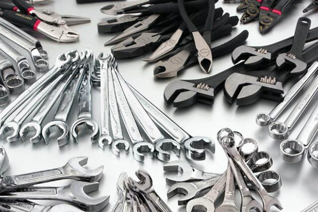

Sobre a Oficina Mecânica do Aroldo
Localizada no bairro central da cidade
Mecânica do Aroldo traz para o mercado o que há de melhor para o seu veiculo. Fundada em 2021, a Oficina Mecânica do Aroldo já é destaque na cidade e conquista novos clientes a cada dia.Nossa missão é: "Proporcionar aos clientes um bom atendimento"
Oferecemos profissionais experientes e antenados às mudanças no mundo de automotores. O atendimento possui padrão de excelência e agilidade, garantindo qualidade e satisfação dos nossos clientes.
Nossa Localização
Nosso estabelecimento esta localizado no bairro central da cidade
Benefícios
- Atendimento aos Clientes
- Espaço diferenciado
- Localização
- Profissionais Qualificados
- Pontualidade
- Limpeza e agilidade